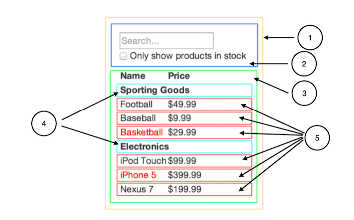
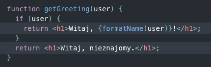

Komponenty
React wprowadza podejście oparte na komponentach, które pozwala na tworzenie wielokrotnie używalnych fragmentów kodu. Komponenty mogą być łączone w większe jednostki, co ułatwia zarządzanie i utrzymanie kodu aplikacji. Każdy komponent w React ma swój własny stan i logikę, dzięki czemu można w prosty sposób zarządzać zachowaniem poszczególnych elementów interfejsu użytkownika.
Dzięki modułowej architekturze opartej na komponentach, współpraca w zespole oraz skalowanie projektów staje się znacznie prostsze. Komponenty mogą być niezależnie rozwijane przez różnych programistów, a następnie łączone w jedną spójną aplikację. Daje to większą elastyczność i kontrolę nad kodem, przyspieszając rozwój aplikacji i minimalizując potencjalne błędy.
Wprowadzenie komponentów do projektu umożliwia również łatwiejsze testowanie i kontrolę jakości. Testowanie jednostkowe, które sprawdza funkcjonalność pojedynczych komponentów, staje się prostsze do przeprowadzenia i utrzymania. Ponadto, izolacja komponentów pozwala na bardziej efektywne diagnozowanie i naprawianie problemów, gdyż zespół deweloperski może skupić się na naprawie wybranego komponentu, zamiast analizować całą aplikację.
Wirtualny DOM
React korzysta z koncepcji wirtualnego DOM, który jest lekką reprezentacją rzeczywistego drzewa DOM. Dzięki temu możliwe jest minimalizowanie kosztownych operacji na rzeczywistym DOM i optymalizowanie wydajności aplikacji. Gdy następuje zmiana stanu komponentu, React tworzy nowe drzewo wirtualnego DOM, porównuje je z poprzednim i wprowadza tylko niezbędne zmiany w rzeczywistym DOM.
JSX
JSX to składnia rozszerzona dla JavaScript, która pozwala na łączenie kodu HTML i JavaScript w sposób czytelny i łatwy w zarządzaniu. Ułatwia to tworzenie i modyfikowanie interfejsu użytkownika oraz kontrolowanie jego zachowania. JSX pozwala również na wstawianie wyrażeń JavaScript bezpośrednio w kodzie HTML, co ułatwia tworzenie dynamicznych interfejsów użytkownika.
Innym atutem JSX jest jego integracja z komponentami Reacta. Dzięki temu, kod HTML i JavaScript tworzących interfejs użytkownika są przechowywane razem w strukturze komponentu, co sprawia, że kod jest łatwiejszy do zrozumienia i utrzymania. Ponadto, komponenty Reacta są deklaratywne, co oznacza, że opisują, jak powinien wyglądać interfejs użytkownika, a nie jakie operacje są niezbędne do jego osiągnięcia. Dzięki temu kod JSX jest bardziej zrozumiały dla programistów i lepiej oddaje strukturę aplikacji.
Warto również wspomnieć, że JSX jest kompilowany do zwykłego JavaScriptu, co oznacza, że jego użycie nie wpływa negatywnie na wydajność aplikacji. Kompilacja odbywa się podczas procesu budowania aplikacji, dzięki czemu kod wynikowy jest optymalny i gotowy do uruchomienia w przeglądarce. Mimo że składnia JSX może wydawać się nietypowa dla osób nieznających Reacta, z czasem staje się intuicyjna i przyczynia się do zwiększenia produktywności programistów.
Wydajność
React został zaprojektowany z myślą o wydajności. Jego mechanizmy, takie jak wirtualny DOM, sprawiają, że aplikacje oparte na tej bibliotece są szybkie i responsywne, nawet przy dużym obciążeniu. Dzięki optymalizacji procesu renderowania oraz inteligentnym algorytmom do wykrywania zmian, React potrafi szybko aktualizować interfejs użytkownika, zapewniając płynne działanie aplikacji.